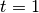
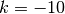
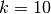
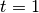
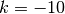
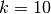
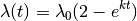
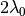
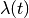
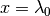

The primary methodological description of the full BAMM model was published in PLoS ONE. A link to the paper is available here
This paper contains a description of the model, the reversible jump MCMC implementation, a comprehensive performance evaluation, and an empirical application. An earlier paper used a related implementation that assumed constant rates of diversification through time within evolutionary rate regimes (Rabosky et al. 2013).
Not much. There is no general rule here, but if your dataset is large enough to consider doing any other sort of diversification analysis, then it is probably large enough for BAMM. The whale diversification analysis shown in the graph gallery uses a time-calibrated tree with 89 tips. We’ve had good success using BAMM on trees that are considerably smaller than this.
Your first consideration should be: for how long should I run the chain? The answer to this question has a lot to do with how quickly the chain converges and how well it samples the posterior. We suggest that there is little advantage in going to more than 5000 samples from the posterior, and potentially large costs: for large datasets, sampling too frequently with BAMM can literally generate gigabytes of highly autocorrelated and mostly-unusable output. Moreover, due to memory issues with R, BAMMtools cannot handle output files of that size. So, pick a chain length (e.g., generations), and then specify a sample frequency that should give you somewhere between 500 and 5000 samples from the posterior after burnin.
We are currently testing extensions of BAMM that allow modeling evolutionary dynamics under a much greater range of phenotypic evolutionary scenarios, as well as the incorporation of paleontological data. Bleeding edge releases of BAMM can be obtained from our GitHub page.
The model originally described for time-varying macroevolutionary rate regimes (e.g., Rabosky 2014) used a simple exponential change function for rates through time:

We have since come to recognize that this model is not ideal, because it is highly asymmetric with respect to increasing (k > 0) and decreasing (k < 0) rates through time. Specifically, the prior we place on k is symmetric (normal), but the rates are not. The problem, put simply, is that negative values of k can only decrease the evolutionary rate to zero. However, positive values - even of equivalent absolute value - can lead to extremely large values. Just consider the values of the exponential function above evaluated at  , ,  and . With k = -10, the value of the rate function approaches zero, but with k = +10, it is 22026.47. Yet both of these k values have equal prior densities.
, ,  and . With k = -10, the value of the rate function approaches zero, but with k = +10, it is 22026.47. Yet both of these k values have equal prior densities.
We thus modified the exponential change function to make it symmetric. For k < 0, we use the exponential change function defined above. For k > 0, we use the function

If k > 0, this function asymptotically approaches the limiting value .
This has the nice property that the function  is symmetric about the line , for positive and negative values of k with the same absolute value.
BAMM models the dynamics of speciation and extinction within rate regimes using an exponential change function described in the preceding section. Theoretically, a linear diversity-dependent change in speciation rates through time leaves a signal in molecular phylogenies that is virtually indistinguishable from an exponential time-dependent change in rates. Our analyses of simulated datasets suggest that these two types of models are not distinguishable in practice.
We have conducted extensive performance evaluations where we have simulated datasets under formal diversity-dependent scenarios, then used BAMM to reconstruct the number of macroevolutionary rate regimes as well as the dynamics of speciation and extinction through time. Our simulations indicate that BAMM can estimate both the number of distinct macroevolutionary regimes, as well as the underlying evolutionary rates, even though we are using the exponential approximation to the diversity-dependent process. We have published these results here (non-functional link).
It is (vastly) more efficient computationally to work with the exponential change model than the formal diversity-dependent model, and calculations of single likelihoods on phylogenies can be many orders of magnitude faster with the exponential approximation than with the formal diversity-dependent model. The multi-process explorations of macroevolutionary dynamics that are possible with BAMM wouldn’t really be feasible without the ability to quickly compute likelihoods.
As an aside, the user is encouraged to remember that all analytically tractable models of diversity-dependence (e.g., Rabosky & Lovette, Proc. R. Soc. B., 2008; or Etienne et. al., Proc. R. Soc. B, 2011) are models that we are imposing on the data: there is no reason why a true diversity-dependent process need follow a linear model.